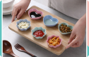
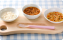

Đặc điểm về ăn dặm kiểu Nhật qua các giai đoạn ăn dặm
Phương pháp ăn dặm kiểu Nhật hiện đang được rất nhiều mẹ quan tâm để mẹ áp dụng cho
bé yêu. Mẹ đã biết phương pháp ăn dặm này chưa? Hãy cùng Mabu dinh dưỡng tham khảo về phương pháp Ăn
dặm kiểu Nhật được tham khảo từ cuốn “Ăn dặm không nước mắt” nhé!
Phương pháp ăn dặm kiểu Nhật hiện đang được rất nhiều mẹ quan tâm để mẹ áp dụng cho
bé yêu. Mẹ đã biết phương pháp ăn dặm này chưa? Hãy cùng Mabu dinh dưỡng tham khảo về phương pháp Ăn
dặm kiểu Nhật được tham khảo từ cuốn “Ăn dặm không nước mắt” nhé!
Các bài viết khác
# Chăm sóc trẻ sơ sinh
Dấu hiệu bé sốt mọc răng mẹ cần chú ý

# Phương pháp ăn dặm
Lượng ăn cho bé theo từng tháng tuổi
# Quá trình phát triển
Chỉ số phát triển thể chất của bé từ 1 - 12 tháng tuổi

# Dinh dưỡng - Thực phẩm - Thực đơn
Lượng ăn cho bé theo từng tháng tuổi
# Chăm sóc trẻ sơ sinh
Điều nên và không nên làm khi trẻ sốt cao co giật